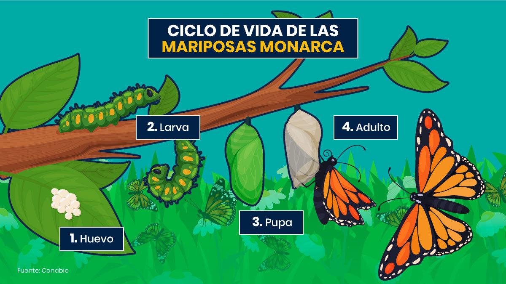

"La felicidad es como una mariposa, que cuando se la persigue, siempre está fuera de nuestro alcance; pero que si te sientas silenciosamente, puede posarse en ti"
Introducción
Las mariposas monarcas (Danaus plexippus) son conocidas por su espectacular migración anual y por ser una de las especies más reconocibles de mariposas en América del Norte. Este fenómeno natural es único y ha fascinado a científicos y entusiastas de la naturaleza durante décadas.
Estas mariposas recorren miles de kilómetros desde Canadá y Estados Unidos hasta los bosques de oyamel en México, donde pasan el invierno. Esta migración no solo es un ejemplo asombroso de adaptación y resistencia, sino también un símbolo de la belleza y fragilidad de la naturaleza.
En México, las mariposas monarcas encuentran refugio en varios santuarios. Estos son algunos de los más destacados:
Santuario Mariposa Monarca, Michoacán: El santuario más grande y conocido, donde millones de mariposas se agrupan en los bosques de oyamel.
Santuario Piedra Herrada, Estado de México: Otra área importante donde las mariposas monarcas llegan durante su migración.
Reserva de la Biosfera Mariposa Monarca, Michoacán y Estado de México: Área protegida que incluye varios santuarios y hábitats críticos para las mariposas.
Características
Sus alas son transparentes.
Alcanzan 48 Km/h volando.
Les gusta el calor.
Su vista es ultravioleta.
Los receptores gustativos están en sus patas.
Usan sus alas como camuflaje.
Necesitan del sol para volar.
Polvo del amor.
Ciclo de Vida
Como todas las mariposas, la Monarca tiene un ciclo de vida breve que pasa por una impresionante metamorfosis. Para la primera etapa las hembras ponen sus pequeños huevos blancos en las hojas de los algodoncillos (Asclepias spp.). Cada hembra pone alrededor de 400 huevos, de dos milímetros de tamaño, individualmente (no en grupos) en la parte inferior (envés) de las hojas de las plantas. Después de cuatro a ocho días nacen unas diminutas orugas de rayas blancas, negras y amarillas que se alimentan vorazmente de las hojas del algodoncillo.

Enlaces
Aquí tienes algunos enlaces donde puedes saber mucho más sobre las Mariposas Monarcas: